一、设计思想及具体实现
设计思想
在看完学长的部署文档后，我的第一反应咋这么麻烦。于是上网找到了EJBCA的相关docker，这样便节省了很多时间。同时也可以用EJBCA产生的证书做一些应用。
系统搭建环境
这里使用环境为腾讯云轻量服务器CentOS7.6，EJBCA docker版本为 2021.6月版本。
搭建步骤
部署docker环境，查询网上教程即可
具体网址如下https://hub.docker.com/r/primekey/ejbca-ce，通过官网教程，我们使用如下命令拉取EJBCA docker。
docker pull primekey/ejbca-ce
- 根据该docker镜像中的描述，可以直接使用如下命令启动一个无需客户端证书的临时测试实例（仅限于测试，不推荐在公网环境下使用）：
docker run -it --rm -p 80:8080 -p 443:8443 -h mycahostname -e TLS_SETUP_ENABLED="simple" primekey/ejbca-ce
- 或使用如下命令启动一个客户端证书验证的实例
docker run -it --rm -p 80:8080 -p 443:8443 -h mycahostname primekey/ejbca-ce
注意：
这两个命令中的mycahostname可更换为域名；
默认的80和443端口在很多地方是写死的，因此有条件的话可以考虑使用默认的80和443；
如果不使用TLS_SETUP_ENABLED=”simple”的环境变量，那么在容器启动后会给出客户端证书的下载地址和密码，如：
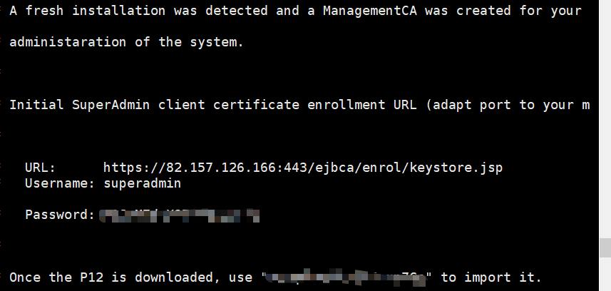
- 部署完成后，访问 https://yourHostName/ejbca/，然后选择Create Browser Certificate，进入验证页面，输入上图显示的账号与口令。
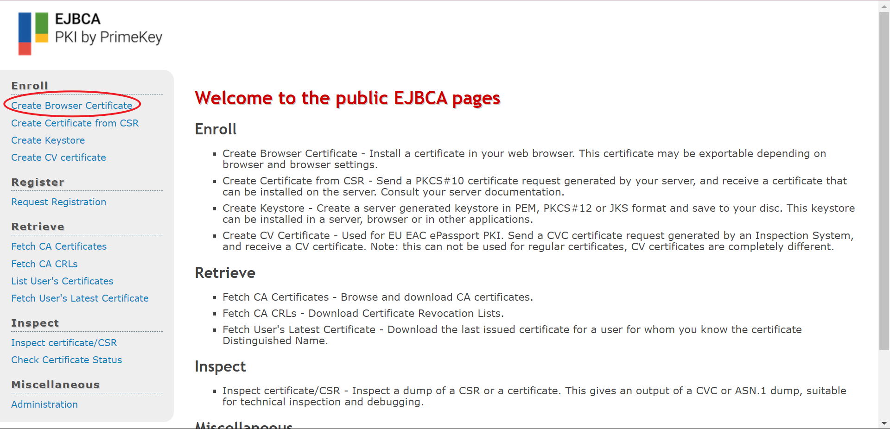
选择。。。。。。
- 注册证书导入浏览器，输入刚才登录使用的口令即可。
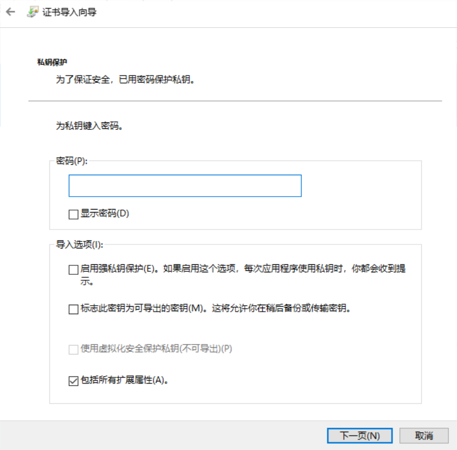
- 导入成功后，关闭浏览器，进入网址，会弹出选择证书的页面。我们选择刚才导入的证书。
- 进入页面后，选择Administration。页面如下
系统的配置
建立新的CA
我们首先从建立新的CA开始，我们选择以下的选项，点击后，可以在界面的下方看到Add CA，输入想要创建的CA名称单击创建即可。
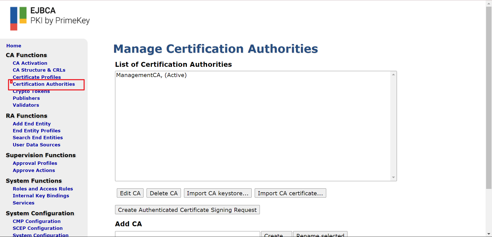
创建完CA后会跳转到CA信息界面，可以选择修改增加一些CA的相关信息和属性。一般来说需要修改的是有效期，有效期决定了CA能够使用年限，属于必填。
新增证书模板
- 进入CA功能选择编辑证书模板，然后添加新的模板。
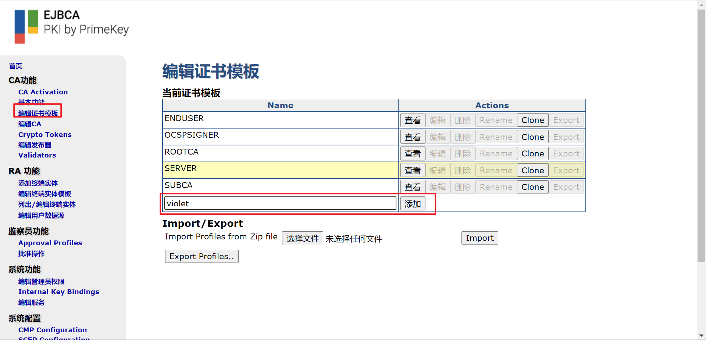
- 点击该证书模板后的编辑按钮，进入编辑页面，选择需要设置的字段属性值
类型：如果Available CAs选择的是子CA ,那么这里必须选择Sub CA，否则在证书导入到IE里面会有问题：如证书路径等问题。
有效期 or end date of the certificate ：10y
密钥用途:根据需要选择秘钥用途
密钥用途扩展：根据需要选择 扩展密钥用法
可用的CA：在Certificate Profiles新增的CA和根CA都在这里
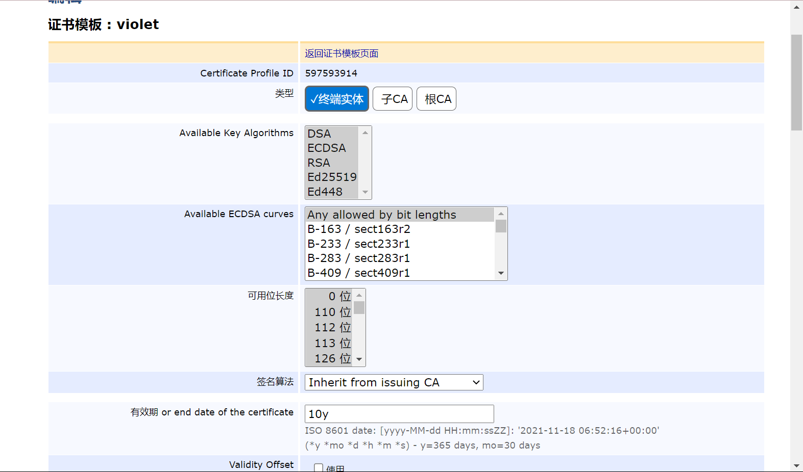
- 最后保存即可
新增用户注册模板
- 进入RA功能（RA Functions）->编辑终端实体模板（Edit End Entity Profiles）页面，在“添加模板”下输入模板名称，点击添加
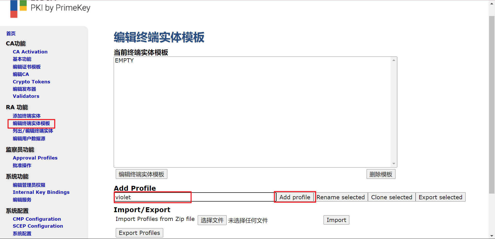
- 添加后在“当前中终端实体模板中”选中该模板，然后点击“编辑终端实体模板”
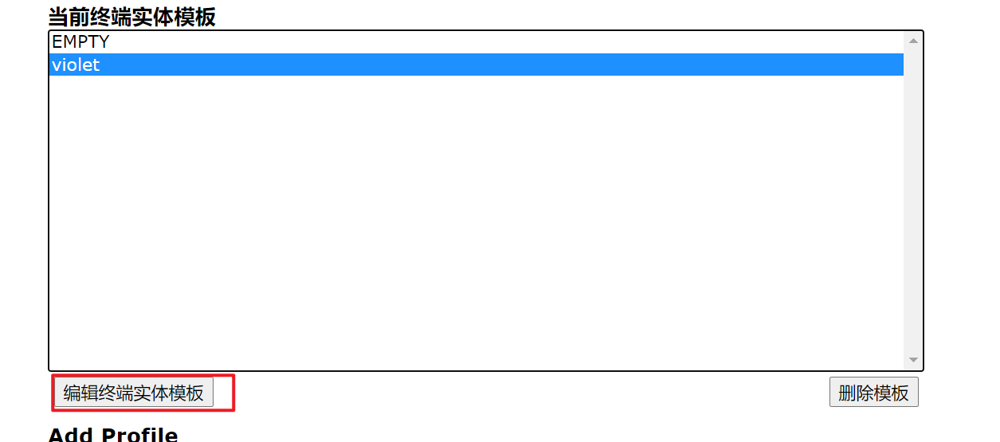
- 根据需要配置该终端实体模板
在主题（DN）字段中，通过添加按钮，可以根据需求增加如下属性，并且根据需求设置（必需的、可修改的）：
CN, 通用名；
OU, 组织部门；
O, 组织；
EMail, DN中的email地址
默认证书模板：可以根据需求选择自己新增的证书模板
可用的证书模板：根据需要选择
默认CA：可以根据需求选择自己新增的CA
可用的CA：根据需要选择
默认Token：根据需要选择
可用的Tokens：根据需要选择
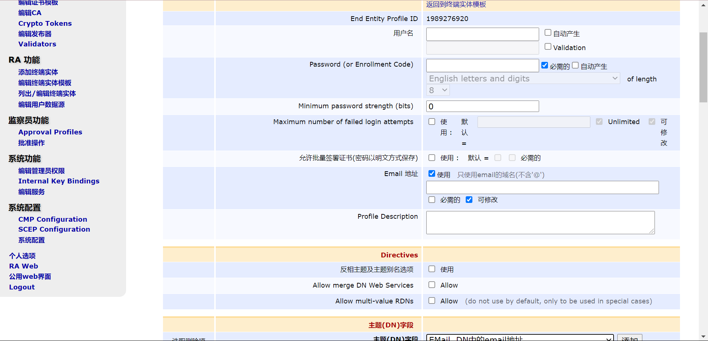
系统的搭建
用户注册申请（即添加终端实体）
在RA功能（RA Functions ）->添加终端实体（Add End Entity）中增加一个violet的普通用户xuhao;
根据自己的需求进行选择填入内容
终端实体模板：可以选择上面创建的Rxuser
用户名：根据需要设置
Password：根据需要设置（我们自己设置为11111111）
主题（DN）字段：根据需要填写
Main certificate data:
证书模板：可以选择自己设置的模板
CA：选择需要的CA，如RxCA;
Token：
p12 File用于存放个人证书/私钥，包含保护密码，存储方式为2进制形式
PEM File用于存放个人证书，不包含私钥，存放方式是ascii形式
JKS File如果要用于Web Service及Java程序，选用此选项
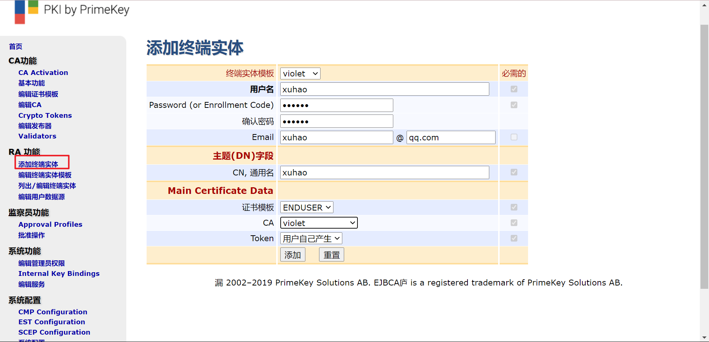
- 添加即可
查看证书信息
查看刚才添加终端实体，并查看内容
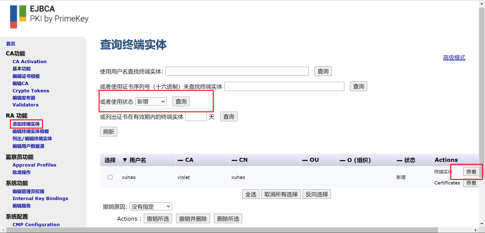
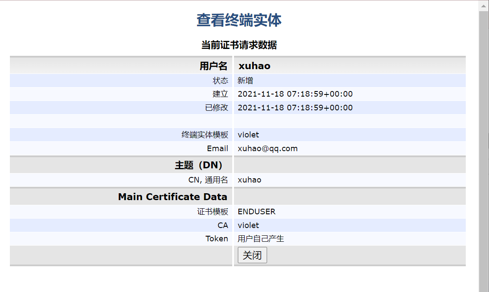
下载证书
只有终端实体装填为”新增”的才可以下载证书，如果该证书被下载过，可以去编辑该终端实体的状态，修改为新增状态，也可以重新下载该证书。
实现安全的邮件通信
步骤一）设置主机名并更新 /etc/hosts
hostnamectl set-hostname violeteg.cn
exec bash
此外，你需要在 /etc/hosts 中添加系统的主机名和 IP：
vim /etc/hosts
82.157.126.166 violeteg.cn
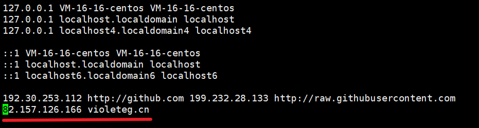
步骤二）安装 Postfix 邮件服务器
yum -y install postfix dovecot cyrus-sasl
结果如下
yum -y install postfix dovecot cyrus-sasl
Loaded plugins: fastestmirror, langpacks
Repository epel is listed more than once in the configuration
Loading mirror speeds from cached hostfile
* webtatic: uk.repo.webtatic.com
docker-ce-stable | 3.5 kB 00:00:00
epel | 4.7 kB 00:00:00
extras | 2.9 kB 00:00:00
mysql-connectors-community | 2.6 kB 00:00:00
步骤三）启动并启用 Postfix 服务
成功安装 Postfix 后，运行以下命令启动Postfix 服务：
systemctl start postfix
systemctl enable postfix
用一下命令查看postfix状态
systemctl status postfix
状态如下，说明Postfix正常运行。
[root@violeteg ~]# systemctl status postfix
● postfix.service - Postfix Mail Transport Agent
Loaded: loaded (/usr/lib/systemd/system/postfix.service; enabled; vendor preset: disabled)
Active: active (running) since Wed 2021-10-13 18:47:33 CST; 1 months 16 days ago
Main PID: 1434 (master)
Tasks: 3
Memory: 5.7M
CGroup: /system.slice/postfix.service
├─ 1434 /usr/libexec/postfix/master -w
├─ 1452 qmgr -l -t unix -u
└─28716 pickup -l -t unix -u
Oct 13 18:47:31 VM-16-16-centos systemd[1]: Starting Postfix Mail Transport Agent...
Oct 13 18:47:33 VM-16-16-centos postfix/master[1434]: daemon started -- version 2.10.1, configuration /etc/postfix
Oct 13 18:47:33 VM-16-16-centos systemd[1]: Started Postfix Mail Transport Agent.
步骤四）安装 mailx 邮件客户端
在配置 Postfix 服务器之前，我们需要安装 mailx，要安装它，请运行以下命令：
yum install mailx
步骤五）配置 Postfix 邮件服务器
Postfix 的配置文件位于 /etc/postfix/main.cf 中
vi /etc/postfix/main.cf
然后我们修改以下几行，因为这几行分布在不同位置，所以可以使用/+查找字符进行查找，n为向下查找，N为向上查找
myhostname = your_hostname
mydomain = your_domain
myorigin = $mydomain
## 取消注释并将 inet_interfaces 设置为 all##
inet_interfaces = all
## 更改为 all ##
inet_protocols = all
## 注释 ##
#mydestination = $myhostname, localhost.$mydomain, localhost
## 取消注释 ##
mydestination = $myhostname, localhost.$mydomain, localhost, $mydomain
## 取消注释并添加 IP 范围 ##
mynetworks = 192.168.1.0/24, 127.0.0.0/8
## 取消注释 ##
home_mailbox = Maildir/
配置完成后，保存退出，重启postfix。
systemctl restart postfix
步骤六）测试 Postfix 邮件服务器
创建一个测试账号
useradd postfixuser
passwd postfixuser
接下来，运行以下命令，从本地用户 pkumar 发送邮件到另一个用户 postfixuser。
telnet localhost smtp
或者
telnet localhost 25
如果没有telnet，下载即可
yum install telnet -y
便得到了以下结果
[root@violeteg ~]# telnet localhost smtp
Trying ::1...
Connected to localhost.
Escape character is '^]'.
220 violeteg.cn ESMTP Postfix
上面的结果确认与 postfix 邮件服务器的连接正常。接下来，输入命令：
u
ehlo localhost
结果如下
ehlo localhost
250-violeteg.cn
250-PIPELINING
250-SIZE 10240000
250-VRFY
250-ETRN
250-ENHANCEDSTATUSCODES
250-8BITMIME
250 DSN
WARNING! The remote SSH server rejected X11 forwarding request.
Last failed login: Mon Nov 29 05:51:55 CST 2021 from 172.223.12.37 on ssh:notty
There were 10053 failed login attempts since the last successful login.
Last login: Sat Nov 27 15:27:11 2021 from 112.224.17.85
[root@VM-16-16-centos ~]# hostnamectl set-hostname violeteg.cn
[root@VM-16-16-centos ~]# exec bash
[root@violeteg ~]# vim /etc/hosts
[1]+ Stopped vim /etc/hosts
[root@violeteg ~]# vim /etc/hosts
[root@violeteg ~]# systemctl status postfix
● postfix.service - Postfix Mail Transport Agent
Loaded: loaded (/usr/lib/systemd/system/postfix.service; enabled; vendor preset: disabled)
Active: active (running) since Wed 2021-10-13 18:47:33 CST; 1 months 16 days ago
Main PID: 1434 (master)
Tasks: 3
Memory: 5.7M
CGroup: /system.slice/postfix.service
├─ 1434 /usr/libexec/postfix/master -w
├─ 1452 qmgr -l -t unix -u
└─28716 pickup -l -t unix -u
Oct 13 18:47:31 VM-16-16-centos systemd[1]: Starting Postfix Mail Transport Agent...
Oct 13 18:47:33 VM-16-16-centos postfix/master[1434]: daemon started -- version 2.10.1, configuration /etc/postfix
Oct 13 18:47:33 VM-16-16-centos systemd[1]: Started Postfix Mail Transport Agent.
[root@violeteg ~]# vi /etc/postfix/main.cf
[root@violeteg ~]# systemctl restart postfix
[root@violeteg ~]# useradd postfixuser
[root@violeteg ~]# passwd postfixuser
Changing password for user postfixuser.
New password:
BAD PASSWORD: The password is shorter than 8 characters
Retype new password:
Sorry, passwords do not match.
New password:
Retype new password:
Sorry, passwords do not match.
New password:
Retype new password:
passwd: all authentication tokens updated successfully.
[root@violeteg ~]# telnet localhost smtp
bash: telnet: command not found
[root@violeteg ~]# yum install telnet -y
Loaded plugins: fastestmirror, langpacks
Repository epel is listed more than once in the configuration
Loading mirror speeds from cached hostfile
* webtatic: uk.repo.webtatic.com
docker-ce-stable | 3.5 kB 00:00:00
epel | 4.7 kB 00:00:00
extras | 2.9 kB 00:00:00
mysql-connectors-community | 2.6 kB 00:00:00
mysql-tools-community | 2.6 kB 00:00:00
mysql57-community | 2.6 kB 00:00:00
os | 3.6 kB 00:00:00
updates | 2.9 kB 00:00:00
webtatic | 3.6 kB 00:00:00
(1/2): epel/7/x86_64/updateinfo | 1.0 MB 00:00:00
(2/2): epel/7/x86_64/primary_db | 7.0 MB 00:00:01
Resolving Dependencies
--> Running transaction check
---> Package telnet.x86_64 1:0.17-66.el7 will be installed
--> Finished Dependency Resolution
Dependencies Resolved
========================================================================================================================================================
Package Arch Version Repository Size
========================================================================================================================================================
Installing:
telnet x86_64 1:0.17-66.el7 updates 64 k
Transaction Summary
========================================================================================================================================================
Install 1 Package
Total download size: 64 k
Installed size: 113 k
Downloading packages:
telnet-0.17-66.el7.x86_64.rpm | 64 kB 00:00:00
Running transaction check
Running transaction test
Transaction test succeeded
Running transaction
Installing : 1:telnet-0.17-66.el7.x86_64 1/1
Verifying : 1:telnet-0.17-66.el7.x86_64 1/1
Installed:
telnet.x86_64 1:0.17-66.el7
Complete!
[root@violeteg ~]# yum install telnet -y
Loaded plugins: fastestmirror, langpacks
Repository epel is listed more than once in the configuration
Loading mirror speeds from cached hostfile
* webtatic: uk.repo.webtatic.com
Package 1:telnet-0.17-66.el7.x86_64 already installed and latest version
Nothing to do
[root@violeteg ~]# telnet localhost smtp
Trying ::1...
Connected to localhost.
Escape character is '^]'.
220 violeteg.cn ESMTP Postfix
ehlo localhost
250-violeteg.cn
250-PIPELINING
250-SIZE 10240000
250-VRFY
250-ETRN
250-ENHANCEDSTATUSCODES
250-8BITMIME
250 DSN
mail from:<pkumar>
250 2.1.0 Ok
rcpt to:<postfixuser>
250 2.1.5 Ok
data
354 End data with <CR><LF>.<CR><LF>
Hello, Welcome to my mailserver (Postfix)
.
250 2.0.0 Ok: queued as 3344660296
quit
221 2.0.0 Bye
Connection closed by foreign host.
[root@violeteg ~]# ls /home/postfixuser/Maildir/new
1638153440.Vfd01Ia1b85M751774.violeteg.cn
[root@violeteg ~]# cat /home/postfixuser/Maildir/new/1573580091.Vfd02I20050b8M635437.server1.crazytechgeek.info
cat: /home/postfixuser/Maildir/new/1573580091.Vfd02I20050b8M635437.server1.crazytechgeek.info: No such file or directory
[root@violeteg ~]# 1638153440.Vfd01Ia1b85M751774.violeteg.cn
bash: 1638153440.Vfd01Ia1b85M751774.violeteg.cn: command not found
[root@violeteg ~]# cat 1638153440.Vfd01Ia1b85M751774.violeteg.cn
cat: 1638153440.Vfd01Ia1b85M751774.violeteg.cn: No such file or directory
[root@violeteg ~]# ^C
[root@violeteg ~]# cd /home/postfixuser/Maildir/new
[root@violeteg new]#
[root@violeteg new]# cat 1638153440.Vfd01Ia1b85M751774.violeteg.cn
Return-Path: <pkumar@violet.cn>
X-Original-To: postfixuser
Delivered-To: postfixuser@violet.cn
Received: from localhost (VM-16-16-centos [IPv6:::1])
by violeteg.cn (Postfix) with ESMTP id 3344660296
for <postfixuser>; Mon, 29 Nov 2021 10:36:55 +0800 (CST)
Message-Id: <20211129023707.3344660296@violeteg.cn>
Date: Mon, 29 Nov 2021 10:36:55 +0800 (CST)
From: pkumar@violet.cn
Hello, Welcome to my mailserver (Postfix)
[root@violeteg new]#